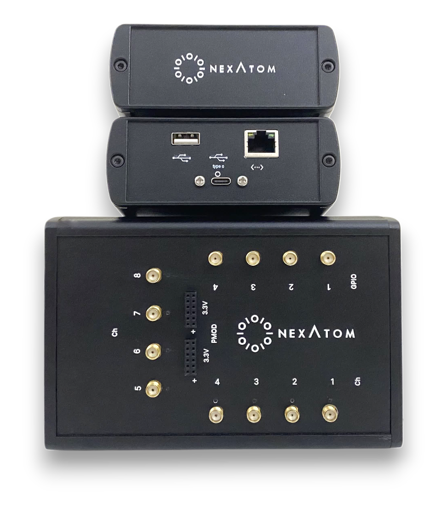

Nexatom Universal Time Taggers
Multi-channel event-timing hardware for coincidence, histogram, correlation, and synchronized measurements.

Time-tagging hardware platforms
UTT810 is the 8-channel model with a Windows software installer. The higher-channel boards extend the same time-tagging product family into custom channel counts.

UTT810
8-channel, 10 ps class universal time tagger with GUI/API software and Windows installer.
View product details
16-in / 8-out custom board
Custom time-tagging board for 16 input and 8 output timing systems.
View board details
32-channel time tagger board
32-channel, 10 ps class Nexatom-designed board for high-channel-count timing systems.
View board detailsMeasured timing workflow
A two-channel timing measurement for UTT810 produced a combined coincidence peak of approximately 49 ps FWHM and an effective single-channel contribution of 24.5 ps FWHM / 10.5 ps RMS, including signal source and measurement-chain uncertainty.